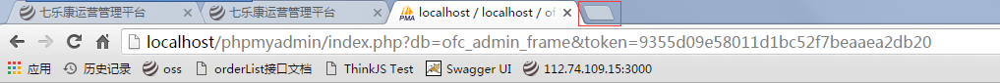
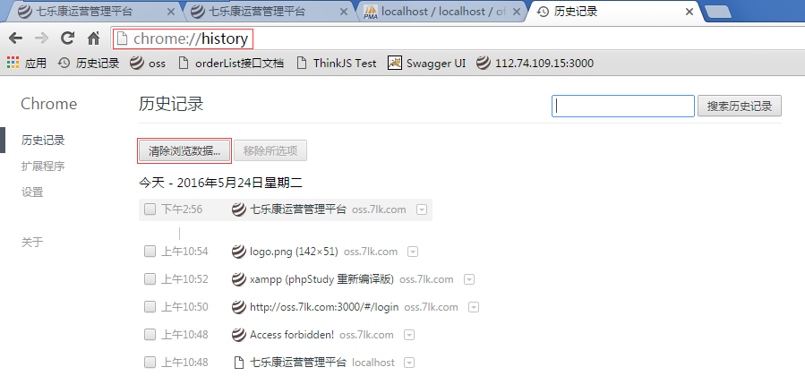
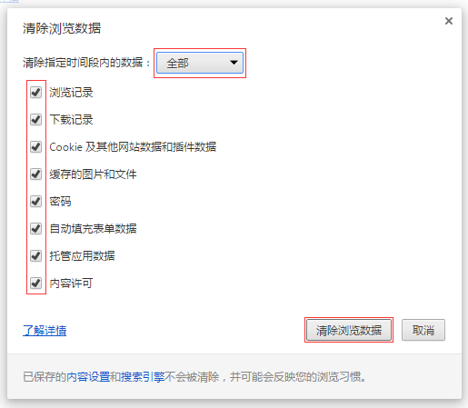

1.关于系统顶部页签操作注意事项
a.当页签数量过多时，部分页签显示不出来时，可将鼠标移到页签条，点击鼠标左键不放，然后左右拖动，就可拖动页签条了
b.可通过双击页签来关闭页签
2.关于系统的浏览器兼容性
a.推荐使用 谷歌浏览器（Chrome） 来浏览系统页面，可点击此处下载安装。
b.本系统只对现代浏览器提供支持。什么是现代浏览器？（Chrome、Firefox、IE10+、Safari...）
c.系统将不会对低版本IE提供支持，如果使用低版本IE浏览系统页面，可能会出现各种意想不到的问题。（PS：很多国产浏览器都是直接调用IE的内核，诸如搜狗，360之流）
d.如果 Chrome浏览器 安装过程出现问题，可直接联系运维解决。
3.Chrome浏览器怎么清除浏览器缓存
虽然系统已经加入了静态资源缓存更新机制，但没法确保所有的静态资源都能实时获取最新
SO，有时系统更新后，需要用户手动清空浏览器缓存或者等待浏览器缓存过期后才能看到最新的效果
考虑到不是每个用户都熟悉Chrome浏览器的使用，这里附上 Chrome浏览器的缓存清除 图文说明：
step 1：点击浏览器页签区最右侧的按钮，新建页签

step 2：在地址栏输入 chrome://history 就会出现如下页面（该页面可以添加到收藏里，方便下次快速打开），点击 清除浏览数据 按钮

step 3：清除指定时间段内的数据选择 全部，把需要清楚的数据勾上（建议全部勾上，Cookie和密码可根据个人需要酌情不勾选）,然后点击 清除浏览数据 按钮。清除缓存成功！

4.系统静态资源版本号更新接口地址（非技术人员无需关心此项）
http://oss.7lk.com/set_v
5.用户批量导入 excel 模版
http://oss.7lk.me/new-users.xlsx
下载填写完后，交给技术人员补充完角色之后，由技术人员导入。
角色值不能乱填，否则导入的用户会没有任何操作权限。内容也必须严格按照所提供的模版填写，否则会导致用户信息有误。